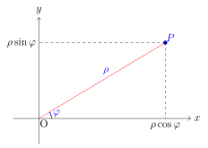

Capitolo 4 · Vettori e sistemi di riferimento
4.3 Coordinate polari
Le coordinate polari sono un sistema di coordinate bidimensionali utilizzato per specificare la posizione di un punto in un piano. In questo sistema, la posizione di un punto viene descritta mediante due valori:
Raggio (): la distanza dal punto all’origine del sistema di coordinate, spesso chiamata polo.
Angolo ():l’angolo misurato in radianti (o gradi) tra il raggio che passa per il punto e l’asse positivo delle x.
In altre parole, invece di usare le coordinate cartesiane, che sono basate su lunghezze lungo assi ortogonali, le coordinate polari si basano su una distanza e un angolo rispetto a un punto di origine.

4.3.1 Conversione da coordinate polari a cartesiane#
Per passare dalle coordinate polari a quelle cartesiane è sufficiente usare alcune relazioni trigonometriche, conoscendo il raggio e l’angolo possiamo ricavare le coordinate e :Viceversa conoscendo e possiamo ricavarci e :